工程13：二構造案は非採用
これは検証資料です。無文字の通常サイトはhttp://127.0.0.1:5208/。美的完成は未達。変更量/閉成分/検査通過を高級感と混同しません。REPORT.md / NEXT-STAGE.md参照。
PC
 保護版・通常表示（未達）
保護版・通常表示（未達）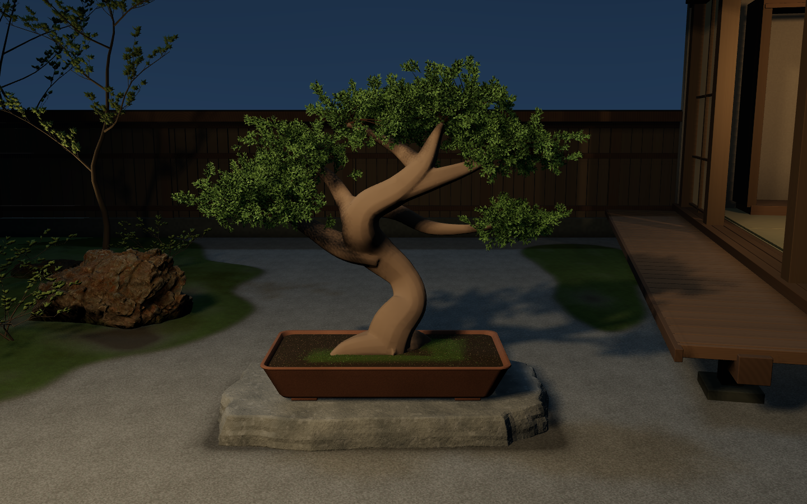
graph-v01 非採用・低詳細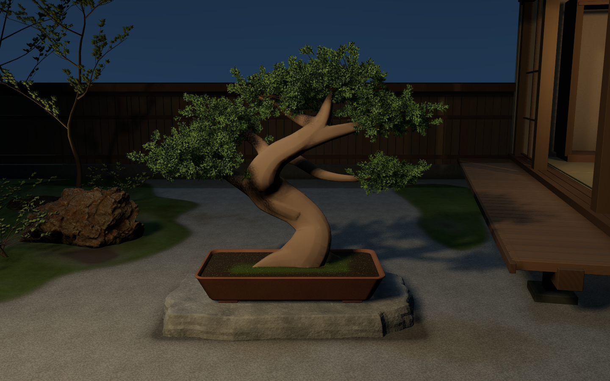
graph-v02 非採用・低詳細390px
 保護版・通常表示（未達）
保護版・通常表示（未達）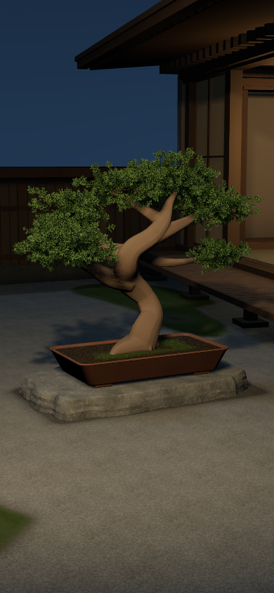
graph-v01 非採用・低詳細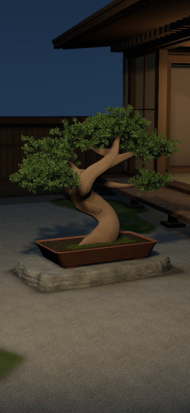
graph-v02 非採用・低詳細320px
 保護版・通常表示（未達）
保護版・通常表示（未達）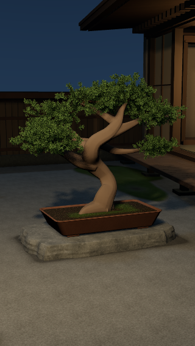
graph-v01 非採用・低詳細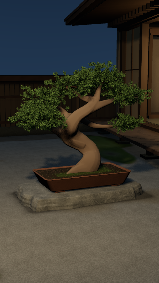
graph-v02 非採用・低詳細clay-whole-front
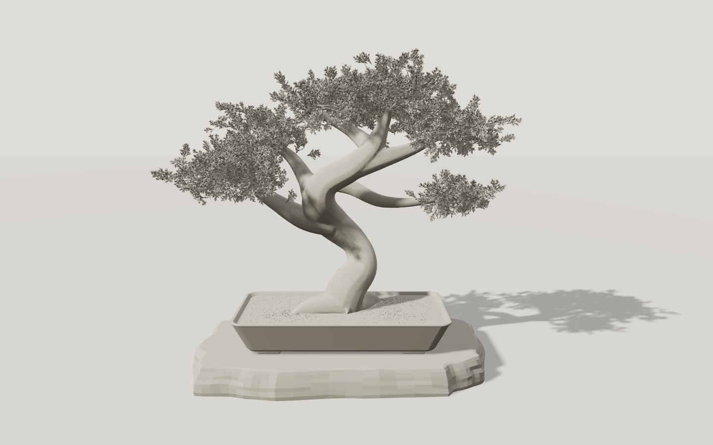
graph-v01 非採用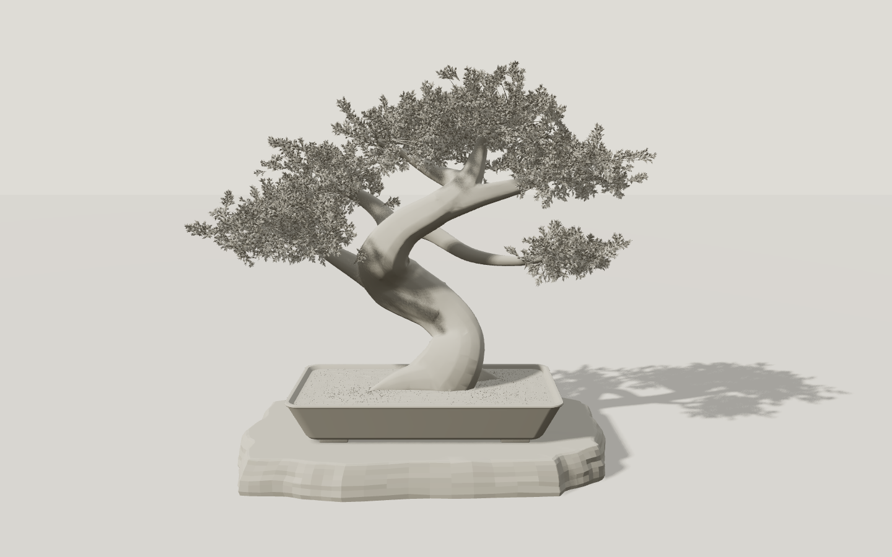
graph-v02 非採用clay-whole-three-quarter
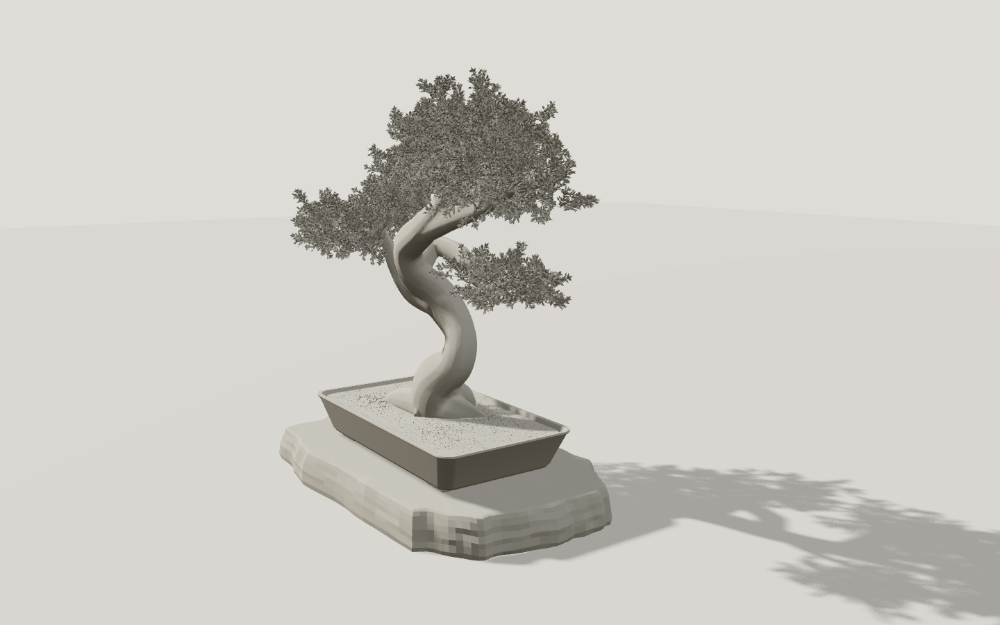
graph-v01 非採用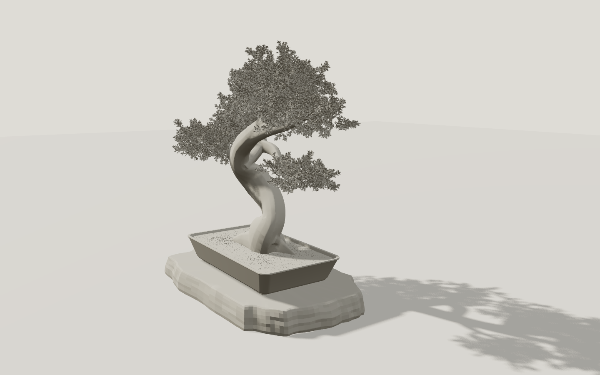
graph-v02 非採用clay-bare-front
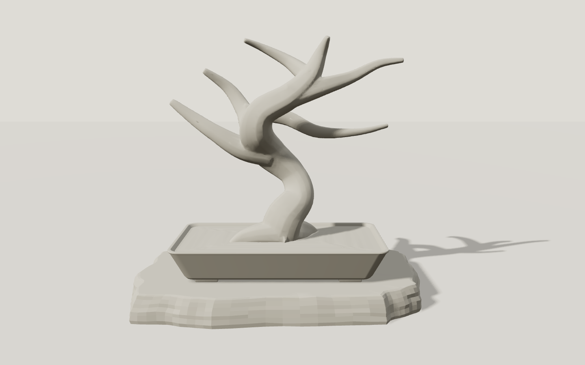
graph-v01 非採用 graph-v02 非採用
graph-v02 非採用動作記録
pc 実Chrome2.2秒/約10fps記録。全rate/実機/長時間未検証mobile-390 実Chrome2.2秒/約10fps記録。全rate/実機/長時間未検証leaf-detail 実Chrome2.2秒/約10fps記録。全rate/実機/長時間未検証
生成夜景参考（方向の比較）

生成参考は通常3Dの背景には使用しません。元の添付実写真は会話で確認済み、Library取得阻害のためこの資料にはローカル埋込なし。